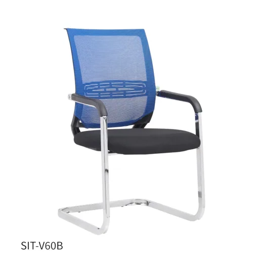
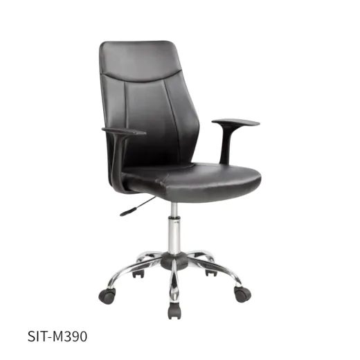
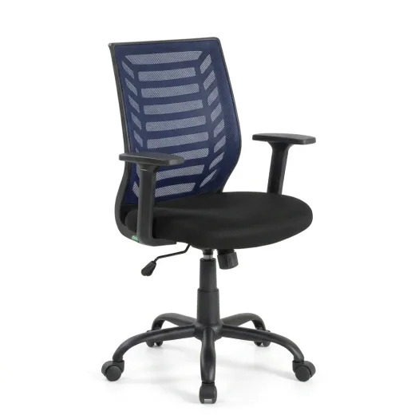
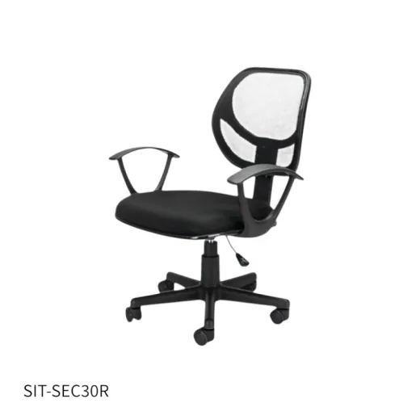

Inicio › Sillas y escritorios › Silla SIT de Espera y Recepción, respaldo de malla, soporte lumbar. Peso: 220Lbs. SIT-V60

SIT · Modelo SITV60
Silla SIT de Espera y Recepción, respaldo de malla, soporte lumbar. Peso: 220Lbs. SIT-V60 Azul
L 1,806.49
En iOffice
Precio en cada tienda
| Tienda | Precio | Antes | Disponibilidad | |
|---|---|---|---|---|
| iOffice | L 1,806.49 | — | Disponible | Ver en tienda › |
Precios referenciales tomados de cada tienda el 28 de noviembre de 2026. El precio válido es el que muestra la tienda al comprar.
Historial de precio
Lo seguimos desde el 16 de noviembre. Precio más bajo registrado: L 1,806.49 en iOffice (16 de noviembre), igual que hoy. El precio no ha cambiado en ese tiempo.
Descripción
¡Mejora la comodidad y el estilo de tu sala de espera con la Silla de Espera y Recepción SIT!
Diseño Moderno: En color negro elegante, esta silla se integra perfectamente en cualquier entorno de recepción o sala de espera, aportando un toque de modernidad y profesionalismo.
Confort Superior: El respaldo de malla proporciona ventilación y frescura, mientras que el soporte lumbar integrado asegura una postura adecuada y reduce la tensión en la espalda.
Resistencia y Durabilidad: Con una capacidad de peso de hasta 220 lbs, esta silla está diseñada para soportar un uso intensivo, garantizando durabilidad y estabilidad.
Otras versiones del Silla SIT de Espera y Recepción, respaldo de malla, soporte lumbar. Peso: 220Lbs. SIT-V60

Otros sillas y escritorios SIT
 Silla SIT Ejecutiva, tejido plástico de Malla con Reposabrazos cromado, Color Negro. Peso: 250Lbs. SIT-M332L 1,783.65En iOffice
Silla SIT Ejecutiva, tejido plástico de Malla con Reposabrazos cromado, Color Negro. Peso: 250Lbs. SIT-M332L 1,783.65En iOffice
Silla SIT Ejecutiva, cuero sintético, asiento acolchonado. Color Negro. Peso: 250Lbs. SIT-M390L 1,904.4En iOffice Silla SIT Ejecutiva, base cromada, apoyo acolchonado. Color Negro. Peso: 200Lbs. SIT-M275L 1,689.37En iOffice
Silla SIT Ejecutiva, base cromada, apoyo acolchonado. Color Negro. Peso: 200Lbs. SIT-M275L 1,689.37En iOffice Silla SIT Ejecutiva SIT, Tela de Malla, Base de PVC Color Blanco. Peso: 190Lbs. SIT-M230 NegroL 1,558.27En iOffice
Silla SIT Ejecutiva SIT, Tela de Malla, Base de PVC Color Blanco. Peso: 190Lbs. SIT-M230 NegroL 1,558.27En iOffice
Silla SIT Ejecutiva, tejido de malla negro y azul, Base Cromada, Color Negro y Azul. Peso: 200Lbs. SIT-M180 AzulL 2,242.82En iOffice
Silla SIT Secretarial, Tela de Malla, Reposa Brazos, Altura Media. Color Negro. Peso: 200Lbs. SIT-SEC30RL 1,296.51En iOffice Silla SIT Ejecutiva, base cromada, Color Negro y Azul. Peso: 200Lbs. SIT-M310 NegroL 2,486.71En iOffice
Silla SIT Ejecutiva, base cromada, Color Negro y Azul. Peso: 200Lbs. SIT-M310 NegroL 2,486.71En iOffice Silla SIT Ejecutiva, respaldar medio, superficie de nylon, reposabrazos ajustables. Color Negro y Gris. Peso: 200Lbs. SIT-M250 Gris claroL 2,576.93En iOffice
Silla SIT Ejecutiva, respaldar medio, superficie de nylon, reposabrazos ajustables. Color Negro y Gris. Peso: 200Lbs. SIT-M250 Gris claroL 2,576.93En iOffice